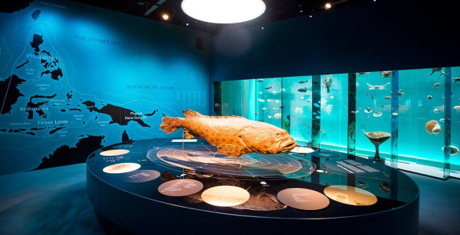
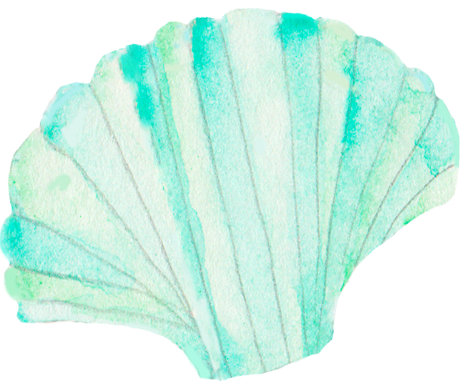
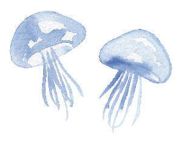

營業時間
週一~週五 10:00~20:30
假日(國定假日) 09:00~22:00
* 最終入場時間為閉館前1小時。
*本館全年無休，若遇任何天候或其它因素而休館將另行公告，敬請留意本館最新消息。
地址：台北市中山區南京東路三段219號
大眾運輸
客運
大都會客運 - 2088：搭乘至海科館站(終點站)下車，步行3分鐘即可抵
首都客運 - 1579：搭乘至海科館站(終點站)下車，步行3分鐘即可抵達

開車
開車
1號 南下→五甲系統→88快速道路→國道3號→南州交流道往省道台1線→經[楓港]橋接省道台26 線→[車城鄉]轉[後灣]方向抵達本館。
3號 南下→南州交流道往省道台1線→經[楓港]橋接省道台26線→[車城鄉]轉[後灣]方向抵達本館。
省道-
經高雄南下:
南下→省道台17線→經[水底寮]後接省道台1線→經[楓港橋]接省道台26線→[車城鄉]轉[後灣]方向抵達本館。
經屏東南下:
南下→省道台1線→經[楓港橋]接省道台26線→[車城鄉]轉[後灣]方向抵達本館。
經台東南下:
南下→省道台9線→經[達仁鄉]過[楓港]接省道台26線→[車城鄉]轉[後灣]方向抵達本館。

接駁車
周一～周五 |
|||||||
|---|---|---|---|---|---|---|---|
台北車站發車 |
桃園車站發車 |
||||||
| 08:00 | 12:00 | 16:00 | 20:00 | 08:00 | 12:00 | 16:00 | 20:00 |
| 09:00 | 13:00 | 17:00 | 21:00 | 09:00 | 13:00 | 17:00 | 21:00 |
| 10:00 | 14:00 | 18:00 | 22:00 | 10:00 | 14:00 | 18:00 | 22:00 |
| 11:00 | 15:00 | 19:00 | 23:00 | 11:00 | 15:00 | 19:00 | 23:00 |
假日(國定假日) |
|||||||
|---|---|---|---|---|---|---|---|
台北車站發車 |
桃園車站發車 |
||||||
| 08:00 | 12:00 | 16:00 | 20:00 | 08:00 | 12:00 | 16:00 | 20:00 |
| 09:00 | 13:00 | 17:00 | 21:00 | 09:00 | 13:00 | 17:00 | 21:00 |
| 10:00 | 14:00 | 18:00 | 22:00 | 10:00 | 14:00 | 18:00 | 22:00 |
| 11:00 | 15:00 | 19:00 | 23:00 | 11:00 | 15:00 | 19:00 | 23:00 |